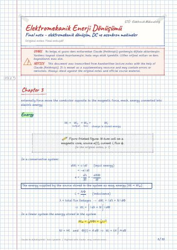

Elektromekanik Enerji Dönüşümü · Dijital ders notu
Final notu – elektromekanik dönüşüm, DC ve asenkron makineler
- Ders
- Elektromekanik Enerji Dönüşümü
- Dönem
- 5. Dönem · 2023–2024 Güz
- Biçim
- PDF · 15 sayfa · 0,2 MB · el yazısı görünümlü LaTeX
- Orijinal not
- Final-notu.pdf

The digital notes were created from the handwritten notes with the help of Claude (Anthropic); they are meant as a supplementary resource and may contain errors. Always rely on the original notes and the official course materials.
Bu notta neler var?
- Chapter 3
- Energy
- 3.3 Magnetic Field as a Medium
- Case 1. Constant Flux
- Case 2. Constant Current
- Magnetic Circuit with Air Gap
- Generator Action
- Multiple Machines
- Force on a Conductor
- Revolving Field of a Three Phase Motor
- Revolving Field of two Phase Motor
- Synchronous Motor
- Reluctance motor
- Direct current Generators
- Induced emf Equation
- Voltage regulation
- For generator
- A seperately Exited DC Generator
- A Shunt generator
- A series Generator
- Compound Generators
- Short shunt
- Maximum Efficiency Criterion
- DC motor
- Speed Regulation
- A series Motor
- A shunt motor
- Methods of Speed Control
- Armature Resistance Control
- Field Control method
- Braking or Reversing DC motors
- Dynamic Braking
- Polyphase Induction Motors
- Speed Torque Characteristic
- Maximum Power Criterion
- Maximum Torque Criterion
- Equivalent Circuit Parameters
- The No-load test
- The load test
Notun metni
Düz metin olarak göster (formüller ve çizimler yoktur)
externally force move the conductor opposite to the magnetic force, mech. energy converted into electric energy
In a conservative system:
0.9The energy supplied by the source stored in the system as mag. energy ( W_i=W_m )
In a linear system the energy stored in the system
3.3 Magnetic Field as a Medium
Case 1. Constant Flux
A magnetic circuit is moved by a distance dx in time dt in a region where the flux is held constant. The energy supplied by the source must be zero because the initial and final values of the flux are the same.
For a conservative system
The mechanical force acting on the magnetic circuit.
Case 2. Constant Current
For a change in flux dφ when I is held constant. the energy input:
For conservative system F_m dx+dW_m=2 dW_m F_m=dW_mdx
When the flux is constant
The rate of change of stored magnetic energy (constant flux)
total airgap inductance
Magnetic Circuit with Air Gap
so the energy in each air gap
When the Flux constant =BA
The rotor of dc machine called armature.
Wound machine (mach. with electromagnets)
mechanical Angle θ_m=θ (Electrical Angle)
The arc by the coil =180^° ⇒ full pitch coil
less than 180^° fractional pitch coil
If φ_p is the flux per pole: φ=φ_pθ
θ : the angular position of the coil in electrical degrees
If there are P poles in a machine θ=P2θ_m
angular f. of the induced emf ω=P2 ω_m → angular f. of the rotor
The max value of the induced emf in a single turn coil
In a dc machine, the average value of the induced voltage in a single turn coil is
Force on a Conductor
For linear current-carrying conductor:
Motor action: the force on the upper conductors of the coil
Revolving Field of a Three Phase Motor:
In a 2 pole motor, the time taken by the flux to complete one revolution along the periphery of the air gap is the same as input. T
the speed of the revolving field in revolutions per second n_s=1T_s=2fP (dönme frekansı)
Sabit frekanslı bir kaynak için hız sabit.
Slip speed: (the difference between synchronous and rotor speed)
Per unit slip:
Revolving Field of two Phase Motor
power angle δ : rotor lags, revolving field
The power is proportional δ
Under no load, δ is almost zero
The torque developed max @ δ=90^°
Torque developed by rotating the system T_e=12 i^2dLdθ rotor speedω_m=2Pω
Torque exerted on the rotor T_e=-12 i^2(L_d-L_q)2θ
Direct current Generators
Induced emf Equation:
Average value of the induced emf total number of coil (slots for a 2 layer winding) and a the number of parallel paths ( a=2 for wave, a=P for lap winding)
The total turns per parallel path: turns between negative and positive brushes
The electrical power developed by the generator:
The average torque developed by a dc machine:
The torque developed by the dc machine:
Power Flow diagram: V_a=V_t+I_aR_a
A seperately Exited DC Generator
Maximum Efficiency Criterion
For a PM dc generator, the power output is
The max power developed when
As R_a→0 , the speed of shunt motor ω_m→ω_mnL . In other words, a shunt motor is basically a constant speed motor.
Methods of Speed Control
Armature Resistance Control
For series or a compound motor:
for a shunt motor
Field Control method
Inserting an external resistor in series with the field winding.
Braking or Reversing DC motors
Plugging: Reverse Supply connections to the armature terminals. At any time during the plugging,
So the braking torque:
The armature disconnected from S. connected across a variable resistor R. The back emf produce a reverse current.
Polyphase Induction Motors
The Synchronous Speed of the revolving field is
(slip) revolving field relative rotor speed
f_r=sf At stand still, the slip is 1 and f_r=f
Per phase eq. circuit
per phase emf in rotor cct.
per phase induced emf in the stator winding.
per phase induced emf in the rotor winding under blocked-rotor condition.
Torque developed by the motor
Speed Torque Characteristic
When the slip falls (below breakdown slip s_b ), the hypothetical resistance becomes the dominating factor.
Y bağlantıdaki hat gerilimine V_L dersek faz gerilim V_p=V_L3 olur.
The stator current
An approximate Eq. circuit
Maximum Power Criterion
P_d is max when the equivalent ^s_p load resistance is equal to the magnitude of the standstill impedance of the motor.
Maximum Torque Criterion
If the stator impedance is so small
When the core loss is considered a part of the rotational loss the power input to the motor using the approximate circuit.
The motor efficiency is
3I_2^2(R_1+R_2)=P_r as the criterion for the maximum efficiency of an induction motor. (stator and rotor copper losses.)
Equivalent Circuit Parameters
The Stator resistance test:
The blocked-Rotor Test:
The No-load test
W_oc = power input I_oc input Current V_oc rated applied voltage
Let P_fw be the friction and windage loss on a per-phase basis.
Then, the power loss in R_c is P_oc=W_oc-P_fwφ